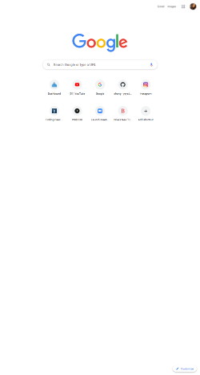
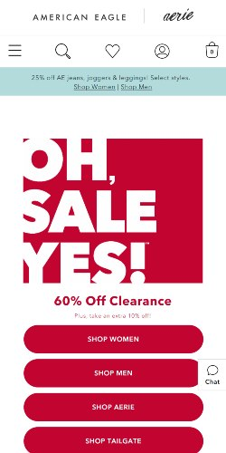
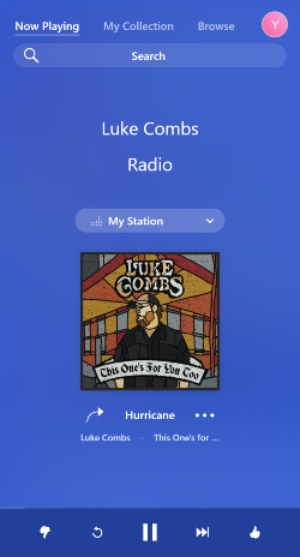

White Space
Google Google is a great at using white space, this makes the brand/product to stand out and invites it user to take action.
Hick’s Law
American Eagle Outfitters One of my favorite things about shopping sites, like American Eagle is their use of the "Hick's Law" this allows the user to narrow down their search ad find what they're looking for.
Fitt's Law
Pandora Radio Pandora has used the "Fitt's Law" far a very long time, wich changes the view of the site as the size of the viewprt changes, this improves accessability, and therefore improves the user's expirience.